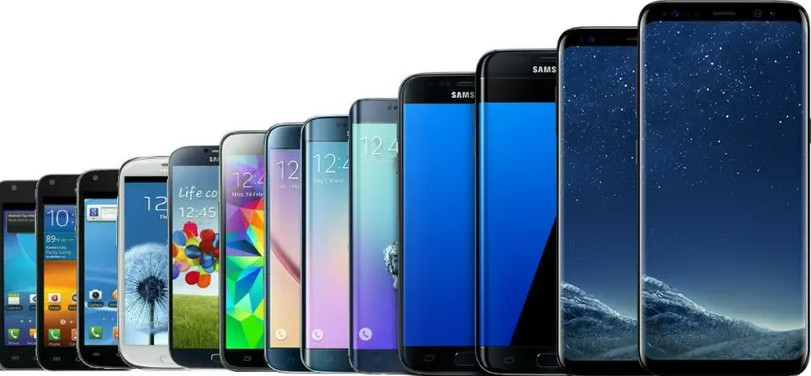
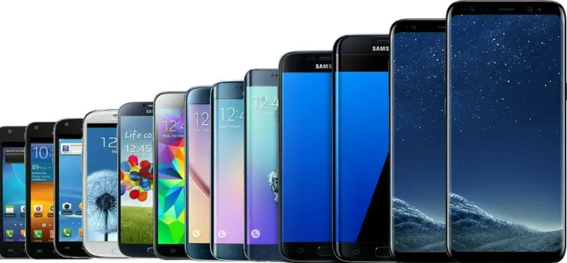

Homepage :
Apple :
Samsung :
Upgrades :
Datapacks :
Sim :
Accessories :
Mobiles :
Contact :
Search :
Terms
Homepage :
Apple :
Samsung :
Upgrades :
Datapacks :
Sim :
Accessories :
Mobiles :
Contact :
Search :
Terms

What you need to know about upgrades of phones over the years
Apple iphone Upgrades:
Over the years apple upgrades have had many upgrades first lets start with the very first iphone created:
Very first iphone:
this had a 3.5 inch display,a megapixel camera,and a multi-touch interface.It ran on a custom version of IOS,then called iphone OS, and it combined an ipod,phone and internet communicator in a single device.
Iphone 3G:
the next phone gets a slightly better upgrade it was the second generation, the iphone 3G connectivity,GPS, and the App store, which allowed users to download third-party apps.It had the same design but with updated internals.
Iphone 3GS:
next we move on to the third iphone called the 3GS it had to options for storage you could either get 16GB or 32GB it was faster, and featured a 3-megapixel camera with video recordings, and introduced voice control.This is when adding the s to the end of a name became an Apple tradition.In this scenario,the s seemingly stood for speed,
Iphone 4:
The next iphone,iphone 4 had a front-facing camera,facetime also came into existence.This newly defined iphone introduced a new era of multitasking as you could interact with multiple apps at once.
Iphone 4s:
The camera got upgraded to 8 mega pixels and the s didn't stand for speed.It stood for Siri,the brand new voice assistant that now plays such a big role on the iphone.
Iphone 5:
The Iphone 5 featured a taller 4-inch display and the A6 chip.It also replaced the charging port for a lightning connector, added LTE support for new 4G networks, and the phone's casing was now made of lightweight aluminum
Iphone 5S:
Touch ID feature was introduced. Say goodbye to passwords! Now you can access your phone with the ease of a fingerprint. This iPhone also had a new M7 motion processor that enabled users to track their steps throughout the day. The idea of health and fitness tracking was on the horizon.
Iphone 5C:
users now had a wide variety of options to choose from. This model did not have as much storage and the Touch ID feature was stripped off. At the time of the phone's release, Apple launched iOS 7 which brought a whole new level of multitasking for apps, and the Control Center was introduced for quick access to the iPhone's settings.
Iphone 6 AND 6 Plus:
The larger iPhone 6 Plus had the same storage capacities but was priced slightly higher. Both models featured a redesigned, thinner profile, larger displays, and the A8 chip. For some, the plus size was way too big to carry around in our pockets, but there were certainly Plus enthusiasts. These two models were the first to support Apple Pay and the camera became more advanced, giving better photo and video results.
Iphone SE:
This phone offered the majority of flagship features, just with a smaller screen. The iPhone SE combined the design of the iPhone 5s with the internals of the iPhone 6s, featuring the A9 chip, a 12-megapixel camera, and Touch ID. It catered to users who preferred a smaller, more affordable iPhone.
Iphone 7 AND 7 Plus:
The phones featured the A10 Fusion chip and an advanced dual-camera system, allowing users to take the perfect “Portrait” photos. The biggest change was the removal of the headphone jack, which led to controversial debates. Apple also decided to make the phone water-resistant and included the most advanced processors yet.
Iphone 8:
These models featured the most powerful and smartest chip ever, the A11 Bionic. The Retina HD display in combination with the new 12-megapixel camera makes your photos and videos look more colorful than ever. The A11 Bionic provides an amazing amount of power to create extraordinary augmented reality apps and games. Additionally, the phone can be charged wirelessly…say goodbye to annoying chargers.
Iphone X:
The seamless boundary between the device and the screen creates an immersive experience. Apple also eliminated the home button and created a navigation that is strictly gesture-based. Oh, and the cameras got a whole lot better too. The innovative TrueDepth camera system allows users to unlock their phone with just a glance, better known as Face ID. And the most exciting part, you can make your emojis talk!
Iphone XR:
It featured the A12 Bionic chip, a single-lens camera, and a colorful design. The LCD Liquid Retina display and Face ID were also included. It was a popular choice for those who wanted the core iPhone experience with a slightly lower price point.
Iphone XS:
Seamgen Pro Tip: Users are increasingly concerned about data security, and providing apps that respect their privacy sets us apart in the market. Along with Apple, we emphasize security and privacy features in our apps.
Iphone XS Max:
Compared to its predecessor, the iPhone X, the XS Max offered significant improvements in both performance and camera capabilities, making it a compelling choice for Apple enthusiasts and smartphone users seeking cutting-edge technology.
Iphone 11,Iphone 11 pro and iphone 11 pro max:
The iPhone 11 featured Apple's A13 Bionic chip, improved dual-camera system, and a longer battery life. It was praised for its value proposition and the quality of its cameras, making it an attractive choice for many consumers.
IPHONE 12, IPHONE 12 MINI, PRO, AND IPHONE 12 PRO MAX:
The iPhone 12 series introduced 5G capabilities, a new MagSafe feature for improved accessories, and a sleek flat-edge design reminiscent of older iPhones. It featured the A14 Bionic chip, which was faster and more power-efficient, along with improved camera capabilities, making it a significant upgrade for iPhone users.
IPHONE 13, IPHONE 13 MINI, IPHONE 13 PRO, AND IPHONE 13 PRO MAX:
The iPhone 13 series continued to build on the A15 Bionic chip for enhanced performance and battery life. It featured camera improvements, including Cinematic Mode, and a smaller notch on the display. These new features, along with the reliability of the iPhone brand, continued to make the iPhone a popular choice among consumers.
IPHONE 14, IPHONE 14 PLUS, IPHONE 14 PRO, AND IPHONE 14 PRO MAX:
The iPhone 14 Series was powered by the A15 Bionic chip and boasted improved displays and faster RAM for enhanced performance. Notably, the iPhone 14 Pro and Pro Max models featured 1 terabyte storage options starting at $1499 and $1599, respectively. These higher-tier models touted Apple's latest chip advancement, the A16 Bionic Hexacore chip, enhancing their performance even further.
IPHONE 15, IPHONE 15 PLUS, IPHONE 15 PRO, AND IPHONE 15 PRO MAX:
The iPhone 15 Series brought numerous sweeping changes to the iPhone models up to this point. The iPhone 15 featured USB-C charging, camera quality improvements, and notably discontinued the iPhone Pro Max models with 128GB storage. The iPhone 15 base and iPhone 15 Plus models run on the A16 Binoic Hexacore chip, while the iPhone 15 Pro Max and Pro models run on Apple's latest chip innovation, the A17 Pro.
IPHONE 16, IPHONE 16 PLUS, IPHONE 16 PRO, AND IPHONE 16 PRO MAX:
The iPhone 16 series features a sleek design, powerful performance, and advanced camera capabilities. With a refined aerospace-grade frame and smoother edges, the iPhone 16 and iPhone 16 Plus offer a premium feel. Their 6.3-inch and 6.7-inch Super Retina XDR displays, respectively, along with a 120Hz refresh rate, deliver vibrant visuals. The larger 6.9-inch iPhone 16 Pro and iPhone 16 Pro Max cater to users seeking a more immersive experience.
A performance boost comes from the A18 Bionic chip powering all models, offering faster processing, energy efficiency, and enhanced AI for a seamless experience in gaming, apps, and photography. The 48MP camera, improved night mode, and enhanced Ultra Wide lens ensure stunning photos. New video features include Spatial Audio capture and Audio Mix for enhanced sound editing.
With up to 22 hours of video playback, the iPhone 16 series supports faster MagSafe charging and runs on iOS 18, which brings new customization features and better connectivity, including Wi-Fi 7 and 5G
IPHONE 16E:
Equipped with Apple A18 chip, the iPhone 16e ensured smooth performance across various applications, including those utilizing Apple Intelligence, the company's AI platform at the time. The device also incorporated Apple's first in-house C1 modem, enhancing connectivity and power efficiency. Users extended usage with up to 26 hours of video playback on a single charge, making it a reliable companion for daily activities.
The iPhone 16e was equipped with a 48-megapixel Fusion camera system, enabling high-resolution photos with optical zoom options at 1x and 2x. While it lacked an ultra-wide lens, the primary camera supported various photography modes, including Night mode and Portrait mode with Depth Control. The front-facing 12-megapixel TrueDepth camera offered features like Smart HDR 5 and 4K Dolby Vision video recording, catering to high-quality selfies and video calls In line with modern iPhone models, the iPhone 16e eliminated the Home button and Touch ID, adopting Face ID for secure authentication. It introduced the customizable Action Button, replacing the traditional Mute switch, allowing users to quickly access preferred functions. The device did not support MagSafe accessories or fast wireless charging, offering standard Qi wireless charging up to 7.5W instead.
SAMSUNG:
The First Samsung Galaxy S (2010):
The first Samsung Galaxy, the Samsung S, was released in June 2010, and it was the company’s first serious foray into the high-end smartphone market. It featured a four-inch Super AMOLED display, which, at the time, was praised for its vibrant colors and deep blacks, setting a new standard for screens. Powered by a 1GHz processor and Android 2.1, the Galaxy S quickly gained traction for its speed, sleek design, and large, high-quality display.
Samsung Galaxy S II & Galaxy Note (2011):
The Galaxy S II launched in April 2011, marking a big breakthrough in terms of performance and design. With a 4.3-inch display, the S II was thinner, lighter, and faster than its predecessor, making it one of the most popular Android phones of its time. The Super AMOLED Plus display took things up a notch, as did the 8MP camera. Later in 2011, the ever-popular Galaxy Note debuted. Boasting a 5.3-inch display and one-of-a-kind S Pen capabilities, it quickly created a cult-like following.
Samsung Galaxy S III & Galaxy Note II (2012):
With its 4.8-inch HD Super AMOLED display, the S III broke new ground in screen size and quality, offering a larger and more immersive experience than ever before. Samsung also introduced "S Voice," its first built-in voice assistant. But perhaps the most memorable feature was the Smart Stay technology, which kept the screen lit up while you were looking at it. Later in the year, Samsung released the upgraded Galaxy Note II, boasting a 5.5-inch display and improved S Pen functionality.
Samsung Galaxy S4 & Galaxy Note 3 (2013):
Sporting a 5-inch Full HD Super AMOLED display, it took the screen size even further while keeping a slim profile. The S4 was loaded with software enhancements like Air Gesture and Air View, which let you to interact with your phone without touching the screen. The phone's 13MP camera was also impressive at the time for its high-quality images and video features. Later in the year, the Note 3 made its appearance, delivering a bigger 5.7-inch display and better S Pen functionality and performance.
Samsung Galaxy S5 & Galaxy Note 4 (2014):
was the first to have features like a heart rate monitor and Samsung Health, making it a popular choice with the fitness crowd. It was also the first Galaxy phone with water and dust resistance (IP67), and it also came with a fingerprint scanner embedded into the home button for added security. The camera got a boost with its 16MP rear camera, featuring faster autofocus and improved low-light performance. In October, the Galaxy Note 4 followed with its new QHD display and even more S Pen functions.
Samsung Galaxy S6, S6 Edge & Galaxy Note5 (2015):
The S6 Edge debuted alongside the S6, introducing a new curved-edge design that would go on to be a staple of Samsung's flagship phones. The S6 also featured fast charging and wireless charging capabilities. In August, Galaxy Note5 (with the space between Note and 5 suddenly gone) debuted with an improved S Pen experience and other upgraded features.
Samsung Galaxy S7, S7 Edge & Galaxy Note7 (2016):
he S7 Edge had a more pronounced curved display, while both models kept their sleek glass-and-metal design. A better camera with larger pixels was baked in, boosting low-light performance, and a 5.1-inch Super AMOLED screen made for a more vivid viewing experience. The S7 was also the first Galaxy phone to bring back the microSD card slot, a fan-favorite that had been left out of the 5 and 6 series. Water resistance and fast charging were once again featured, making the S7 series a top contender for the best smartphone of 2016. The latest Galaxy Note7 (which skipped ahead in number to keep up with the rest) also debuted.
Samsung Galaxy S8 Series, Galaxy Note8 & A Series (2017):
With its edge-to-edge Infinity Display and almost no bezels, the S8 inspired a shift toward full-screen designs across the industry. Samsung also introduced the Bixby virtual assistant. In September, the Galaxy Note8, with its dual cameras and upgraded S-Pen features, debuted. Also new this year were Galaxy A-series phones (A3 & A5), which offered slightly pared-down features for those who wanted a little high-end tech at a lower price.
Samsung Galaxy S9 Series, Galaxy Note9 & A Series (2018):
The S9’s revolutionary variable aperture camera was able to adjust the lens to capture more light in low-light conditions. The S9+ featured dual cameras for the first time in the Galaxy S series, allowing for better zoom and portrait shots. The design remained similar to the S8, but the performance improvements and camera capabilities were enough to make the S9 series the most popular smartphones at the time. The Note9 came out in August 2018, promising all-day battery life, a Bluetooth-ready S Pen, and better performance. The Galaxy A Series got a boost with four new phones (A6, A6+, A7, and A8).
Samsung Galaxy S10 Series, Galaxy Note10, Z Fold & A Series (2019):
The S10e delivered a more affordable choice, as did the S10 Lite, while the S10 and S10+ were packed with cutting-edge technology. The S10 series also marked the beginning of 5G connectivity, paving the way for faster download speeds and more responsive networks. The Galaxy Note10 also debuted this year, along with a more affordable Note10 Lite version, and a premium Plus version, which boasted a larger 6.8-inch AMOLED display and a bigger battery. Also making its first appearance was the Galaxy Z Fold phone, Samsung’s first-ever foldable device, which opened like a book but with an inward-folding hinge, making it a truly innovative addition to the lineup. The Galaxy A series also introduced some new phones (A10, A20, A30, A50, and A70).
Samsung Galaxy S20 Series, Z Flip, Z Fold2, Galaxy Note20 & A Series (2020):
was one of Samsung’s most ambitious launches, with the introduction of 5G across the entire lineup. The S20 Ultra, in particular, had a lot of people talking, thanks to its 108MP quad camera and 100x Space Zoom. The S20 series was the first to sport a 120Hz refresh rate display, providing ultra-smooth visuals and a better all-around user experience. A Fan Edition (FE) phone also debuted in the S series and continues throughout each series today, offering some, but not all, of the same great features of the flagship phones at a lower price. Also, making its entrance that year was the innovative Galaxy Z Flip, a retro-style flip-phone but with advanced features. The Galaxy Note20 and 20 Ultra entered the fray with even more upgraded options for fans, as did the Galaxy Z Fold2 and even more Galaxy A-series phones.
Samsung Galaxy S21 Series, Z Flip3, Z Fold3 & A Series (2021):
The S21 and S21+ models both had a 120Hz Dynamic AMOLED display, while the S21 Ultra took things further with a 108MP camera, 100x zoom, and much to the delight of many, the introduction of S Pen support (previously exclusive to the Note series, which had been retired). The S21 series also was the first to not come with a charger in the box, a move that drew mixed reactions. The Galaxy Z Fold3 and Z Flip3 (it skipped a release year), became more durable, more water resistant, and offered S Pen support. The budget-friendly Galaxy A-series and S-series FE phones continued to roll out, as well.
Samsung Galaxy S22 Series, Z Fold4, Z Flip4 & A Series (2022):
the Galaxy S22 series built upon the design and performance enhancements of the S21s, but with better cameras, software, and more premium designs. The S22 Ultra embraced the Note series legacy by integrating the S Pen directly into the device. The S22 Ultra's 108MP camera and advanced low-light photography made it one of the best camera phones available, while the S22 and S22+ offered more compact options for those who preferred a smaller device and didn’t need an S Pen on board. The Z Flip4 and Z Fold4 continued to make headlines with new upgrades and the ability to transform into bigger-than-life smartphones. Meantime, the more budget friendly Galaxy A-series and S-series FE phone options kept coming.
Samsung Galaxy S23 Series, Z Fold5, Z Flip5 & More (2023):
the Galaxy S23 series brought more powerful performance with the Snapdragon 8 Gen 2 chip. The S23 Ultra, with its 200MP camera and incredible zoom capabilities, was a standout, offering unparalleled photo quality. With improved battery life, the latest version of One UI, and support for satellite connectivity, the S23 series was Samsung’s most refined and feature-packed flagship lineup yet. Samsung continued to improve its innovative Galaxy Z Fold5 and Z Flip5 phones in the form of upgraded displays and functionality, while more A-series and S-series FE phones came down the line.
Samsung Galaxy S24 Series, Z Fold6, Z Flip6 & More (2024):
the Galaxy S24 series arrived—and artificial intelligence took center stage. With the addition of Galaxy AI features, including Google Circle to Search, AI-assisted note-taking, translation features, generative photo edit capabilities, and beyond, Galaxy AI was all the talk. Also on tap were the Z Fold6 and Z Flip6, with even more capabilities and many of the same Galaxy AI features baked in. Every one of these phones featured the most advanced processor of its time: the Snapdragon 8 Gen 3, designed to power the latest AI technology. It was also the first series of phones to come with seven years of Android and security updates standard. More A-series and S-series FE phones also rolled out for budget-minded fans.
Samsung Galaxy S25 Series (2025):
he S25 series took center stage with super-evolved Galaxy AI in tow, offering upgrades across all the phones and creating a true AI companion. Google Gemini became more lifelike and intuitive, able to handle multiple tasks across apps with one voice command. The AI-enhanced, pro-style cameras delivered stunning photos with more accurate skin tones and lifelike textures. Features like Nightography and Audio Eraser allowed users to capture memories in almost any condition—day or night—without the need for time-consuming edits.
Every phone in the series came with the upgraded processor needed to power it all: the Snapdragon 8 Elite for Galaxy. The Ultra received significant upgrades, featuring a larger 6.9-inch screen with anti-reflective Corning Gorilla Armor 2 glass, a refined design with smoother, more rounded corners, and a 50MP Ultra-Wide camera—Samsung's highest resolution to date. ProScaler debuted on both the S25 Ultra and the S25+, enhancing image detail and colors for more brilliant displays. The entry-level S25 also saw improvements, offering 12GB of RAM out of the box—an upgrade from the standard 8GB.
It’s incredible to see how far smartphones have come in just 15 years. What was once considered cutting-edge—like 1GHz processors and tiny displays—paved the way for innovations like foldable, tablet-like screens, advanced AI processors, pro-style cameras, and beyond. The journey of the Galaxy series is a testament to how technology will continue to morph and reshape our lives.
Website produced by leigha-marie Rogers

What you need to know about upgrades of phones over the years
Apple iphone Upgrades:
Over the years apple upgrades have had many upgrades first lets start with the very first iphone created:
Very first iphone:
this had a 3.5 inch display,a megapixel camera,and a multi-touch interface.It ran on a custom version of IOS,then called iphone OS, and it combined an ipod,phone and internet communicator in a single device.Iphone 3G:
the next phone gets a slightly better upgrade it was the second generation, the iphone 3G connectivity,GPS, and the App store, which allowed users to download third-party apps.It had the same design but with updated internals.
Iphone 3GS:
next we move on to the third iphone called the 3GS it had to options for storage you could either get 16GB or 32GB it was faster, and featured a 3-megapixel camera with video recordings, and introduced voice control.This is when adding the s to the end of a name became an Apple tradition.In this scenario,the s seemingly stood for speed,Iphone 4:
The next iphone,iphone 4 had a front-facing camera,facetime also came into existence.This newly defined iphone introduced a new era of multitasking as you could interact with multiple apps at once.Iphone 4s:
The camera got upgraded to 8 mega pixels and the s didn't stand for speed.It stood for Siri,the brand new voice assistant that now plays such a big role on the iphone.
Iphone 5:
The Iphone 5 featured a taller 4-inch display and the A6 chip.It also replaced the charging port for a lightning connector, added LTE support for new 4G networks, and the phone's casing was now made of lightweight aluminum
Iphone 5S:
Touch ID feature was introduced. Say goodbye to passwords! Now you can access your phone with the ease of a fingerprint. This iPhone also had a new M7 motion processor that enabled users to track their steps throughout the day. The idea of health and fitness tracking was on the horizon.
Iphone 5C:
users now had a wide variety of options to choose from. This model did not have as much storage and the Touch ID feature was stripped off. At the time of the phone's release, Apple launched iOS 7 which brought a whole new level of multitasking for apps, and the Control Center was introduced for quick access to the iPhone's settings.
Iphone 6 AND 6 Plus:
The larger iPhone 6 Plus had the same storage capacities but was priced slightly higher. Both models featured a redesigned, thinner profile, larger displays, and the A8 chip. For some, the plus size was way too big to carry around in our pockets, but there were certainly Plus enthusiasts. These two models were the first to support Apple Pay and the camera became more advanced, giving better photo and video results.
Iphone SE:
This phone offered the majority of flagship features, just with a smaller screen. The iPhone SE combined the design of the iPhone 5s with the internals of the iPhone 6s, featuring the A9 chip, a 12-megapixel camera, and Touch ID. It catered to users who preferred a smaller, more affordable iPhone.
Iphone 7 AND 7 Plus:
The phones featured the A10 Fusion chip and an advanced dual-camera system, allowing users to take the perfect “Portrait” photos. The biggest change was the removal of the headphone jack, which led to controversial debates. Apple also decided to make the phone water-resistant and included the most advanced processors yet.
Iphone 8:
These models featured the most powerful and smartest chip ever, the A11 Bionic. The Retina HD display in combination with the new 12-megapixel camera makes your photos and videos look more colorful than ever. The A11 Bionic provides an amazing amount of power to create extraordinary augmented reality apps and games. Additionally, the phone can be charged wirelessly…say goodbye to annoying chargers.
Iphone X:
The seamless boundary between the device and the screen creates an immersive experience. Apple also eliminated the home button and created a navigation that is strictly gesture-based. Oh, and the cameras got a whole lot better too. The innovative TrueDepth camera system allows users to unlock their phone with just a glance, better known as Face ID. And the most exciting part, you can make your emojis talk!
Iphone XR:
It featured the A12 Bionic chip, a single-lens camera, and a colorful design. The LCD Liquid Retina display and Face ID were also included. It was a popular choice for those who wanted the core iPhone experience with a slightly lower price point.
Iphone XS:
Seamgen Pro Tip: Users are increasingly concerned about data security, and providing apps that respect their privacy sets us apart in the market. Along with Apple, we emphasize security and privacy features in our apps.
Iphone XS Max:
Compared to its predecessor, the iPhone X, the XS Max offered significant improvements in both performance and camera capabilities, making it a compelling choice for Apple enthusiasts and smartphone users seeking cutting-edge technology.
Iphone 11,Iphone 11 pro and iphone 11 pro max:
The iPhone 11 featured Apple's A13 Bionic chip, improved dual-camera system, and a longer battery life. It was praised for its value proposition and the quality of its cameras, making it an attractive choice for many consumers.
IPHONE 12, IPHONE 12 MINI, PRO, AND IPHONE 12 PRO MAX:
The iPhone 12 series introduced 5G capabilities, a new MagSafe feature for improved accessories, and a sleek flat-edge design reminiscent of older iPhones. It featured the A14 Bionic chip, which was faster and more power-efficient, along with improved camera capabilities, making it a significant upgrade for iPhone users.
IPHONE 13, IPHONE 13 MINI, IPHONE 13 PRO, AND IPHONE 13 PRO MAX:
The iPhone 13 series continued to build on the A15 Bionic chip for enhanced performance and battery life. It featured camera improvements, including Cinematic Mode, and a smaller notch on the display. These new features, along with the reliability of the iPhone brand, continued to make the iPhone a popular choice among consumers.
IPHONE 14, IPHONE 14 PLUS, IPHONE 14 PRO, AND IPHONE 14 PRO MAX:
The iPhone 14 Series was powered by the A15 Bionic chip and boasted improved displays and faster RAM for enhanced performance. Notably, the iPhone 14 Pro and Pro Max models featured 1 terabyte storage options starting at $1499 and $1599, respectively. These higher-tier models touted Apple's latest chip advancement, the A16 Bionic Hexacore chip, enhancing their performance even further.
IPHONE 15, IPHONE 15 PLUS, IPHONE 15 PRO, AND IPHONE 15 PRO MAX:
The iPhone 15 Series brought numerous sweeping changes to the iPhone models up to this point. The iPhone 15 featured USB-C charging, camera quality improvements, and notably discontinued the iPhone Pro Max models with 128GB storage. The iPhone 15 base and iPhone 15 Plus models run on the A16 Binoic Hexacore chip, while the iPhone 15 Pro Max and Pro models run on Apple's latest chip innovation, the A17 Pro.
IPHONE 16, IPHONE 16 PLUS, IPHONE 16 PRO, AND IPHONE 16 PRO MAX:
The iPhone 16 series features a sleek design, powerful performance, and advanced camera capabilities. With a refined aerospace-grade frame and smoother edges, the iPhone 16 and iPhone 16 Plus offer a premium feel. Their 6.3-inch and 6.7-inch Super Retina XDR displays, respectively, along with a 120Hz refresh rate, deliver vibrant visuals. The larger 6.9-inch iPhone 16 Pro and iPhone 16 Pro Max cater to users seeking a more immersive experience.
A performance boost comes from the A18 Bionic chip powering all models, offering faster processing, energy efficiency, and enhanced AI for a seamless experience in gaming, apps, and photography. The 48MP camera, improved night mode, and enhanced Ultra Wide lens ensure stunning photos. New video features include Spatial Audio capture and Audio Mix for enhanced sound editing. With up to 22 hours of video playback, the iPhone 16 series supports faster MagSafe charging and runs on iOS 18, which brings new customization features and better connectivity, including Wi-Fi 7 and 5GIPHONE 16E:
Equipped with Apple A18 chip, the iPhone 16e ensured smooth performance across various applications, including those utilizing Apple Intelligence, the company's AI platform at the time. The device also incorporated Apple's first in-house C1 modem, enhancing connectivity and power efficiency. Users extended usage with up to 26 hours of video playback on a single charge, making it a reliable companion for daily activities. The iPhone 16e was equipped with a 48-megapixel Fusion camera system, enabling high-resolution photos with optical zoom options at 1x and 2x. While it lacked an ultra-wide lens, the primary camera supported various photography modes, including Night mode and Portrait mode with Depth Control. The front-facing 12-megapixel TrueDepth camera offered features like Smart HDR 5 and 4K Dolby Vision video recording, catering to high-quality selfies and video calls In line with modern iPhone models, the iPhone 16e eliminated the Home button and Touch ID, adopting Face ID for secure authentication. It introduced the customizable Action Button, replacing the traditional Mute switch, allowing users to quickly access preferred functions. The device did not support MagSafe accessories or fast wireless charging, offering standard Qi wireless charging up to 7.5W instead.
SAMSUNG:
The First Samsung Galaxy S (2010):
The first Samsung Galaxy, the Samsung S, was released in June 2010, and it was the company’s first serious foray into the high-end smartphone market. It featured a four-inch Super AMOLED display, which, at the time, was praised for its vibrant colors and deep blacks, setting a new standard for screens. Powered by a 1GHz processor and Android 2.1, the Galaxy S quickly gained traction for its speed, sleek design, and large, high-quality display.
Samsung Galaxy S II & Galaxy Note (2011):
The Galaxy S II launched in April 2011, marking a big breakthrough in terms of performance and design. With a 4.3-inch display, the S II was thinner, lighter, and faster than its predecessor, making it one of the most popular Android phones of its time. The Super AMOLED Plus display took things up a notch, as did the 8MP camera. Later in 2011, the ever-popular Galaxy Note debuted. Boasting a 5.3-inch display and one-of-a-kind S Pen capabilities, it quickly created a cult-like following.
Samsung Galaxy S III & Galaxy Note II (2012):
With its 4.8-inch HD Super AMOLED display, the S III broke new ground in screen size and quality, offering a larger and more immersive experience than ever before. Samsung also introduced "S Voice," its first built-in voice assistant. But perhaps the most memorable feature was the Smart Stay technology, which kept the screen lit up while you were looking at it. Later in the year, Samsung released the upgraded Galaxy Note II, boasting a 5.5-inch display and improved S Pen functionality.
Samsung Galaxy S4 & Galaxy Note 3 (2013):
Sporting a 5-inch Full HD Super AMOLED display, it took the screen size even further while keeping a slim profile. The S4 was loaded with software enhancements like Air Gesture and Air View, which let you to interact with your phone without touching the screen. The phone's 13MP camera was also impressive at the time for its high-quality images and video features. Later in the year, the Note 3 made its appearance, delivering a bigger 5.7-inch display and better S Pen functionality and performance.
Samsung Galaxy S5 & Galaxy Note 4 (2014):
was the first to have features like a heart rate monitor and Samsung Health, making it a popular choice with the fitness crowd. It was also the first Galaxy phone with water and dust resistance (IP67), and it also came with a fingerprint scanner embedded into the home button for added security. The camera got a boost with its 16MP rear camera, featuring faster autofocus and improved low-light performance. In October, the Galaxy Note 4 followed with its new QHD display and even more S Pen functions.
Samsung Galaxy S6, S6 Edge & Galaxy Note5 (2015):
The S6 Edge debuted alongside the S6, introducing a new curved-edge design that would go on to be a staple of Samsung's flagship phones. The S6 also featured fast charging and wireless charging capabilities. In August, Galaxy Note5 (with the space between Note and 5 suddenly gone) debuted with an improved S Pen experience and other upgraded features.
Samsung Galaxy S7, S7 Edge & Galaxy Note7 (2016):
he S7 Edge had a more pronounced curved display, while both models kept their sleek glass-and-metal design. A better camera with larger pixels was baked in, boosting low-light performance, and a 5.1-inch Super AMOLED screen made for a more vivid viewing experience. The S7 was also the first Galaxy phone to bring back the microSD card slot, a fan-favorite that had been left out of the 5 and 6 series. Water resistance and fast charging were once again featured, making the S7 series a top contender for the best smartphone of 2016. The latest Galaxy Note7 (which skipped ahead in number to keep up with the rest) also debuted.
Samsung Galaxy S8 Series, Galaxy Note8 & A Series (2017):
With its edge-to-edge Infinity Display and almost no bezels, the S8 inspired a shift toward full-screen designs across the industry. Samsung also introduced the Bixby virtual assistant. In September, the Galaxy Note8, with its dual cameras and upgraded S-Pen features, debuted. Also new this year were Galaxy A-series phones (A3 & A5), which offered slightly pared-down features for those who wanted a little high-end tech at a lower price.
Samsung Galaxy S9 Series, Galaxy Note9 & A Series (2018):
The S9’s revolutionary variable aperture camera was able to adjust the lens to capture more light in low-light conditions. The S9+ featured dual cameras for the first time in the Galaxy S series, allowing for better zoom and portrait shots. The design remained similar to the S8, but the performance improvements and camera capabilities were enough to make the S9 series the most popular smartphones at the time. The Note9 came out in August 2018, promising all-day battery life, a Bluetooth-ready S Pen, and better performance. The Galaxy A Series got a boost with four new phones (A6, A6+, A7, and A8).
Samsung Galaxy S10 Series, Galaxy Note10, Z Fold & A Series (2019):
The S10e delivered a more affordable choice, as did the S10 Lite, while the S10 and S10+ were packed with cutting-edge technology. The S10 series also marked the beginning of 5G connectivity, paving the way for faster download speeds and more responsive networks. The Galaxy Note10 also debuted this year, along with a more affordable Note10 Lite version, and a premium Plus version, which boasted a larger 6.8-inch AMOLED display and a bigger battery. Also making its first appearance was the Galaxy Z Fold phone, Samsung’s first-ever foldable device, which opened like a book but with an inward-folding hinge, making it a truly innovative addition to the lineup. The Galaxy A series also introduced some new phones (A10, A20, A30, A50, and A70).
Samsung Galaxy S20 Series, Z Flip, Z Fold2, Galaxy Note20 & A Series (2020):
was one of Samsung’s most ambitious launches, with the introduction of 5G across the entire lineup. The S20 Ultra, in particular, had a lot of people talking, thanks to its 108MP quad camera and 100x Space Zoom. The S20 series was the first to sport a 120Hz refresh rate display, providing ultra-smooth visuals and a better all-around user experience. A Fan Edition (FE) phone also debuted in the S series and continues throughout each series today, offering some, but not all, of the same great features of the flagship phones at a lower price. Also, making its entrance that year was the innovative Galaxy Z Flip, a retro-style flip-phone but with advanced features. The Galaxy Note20 and 20 Ultra entered the fray with even more upgraded options for fans, as did the Galaxy Z Fold2 and even more Galaxy A-series phones.
Samsung Galaxy S21 Series, Z Flip3, Z Fold3 & A Series (2021):
The S21 and S21+ models both had a 120Hz Dynamic AMOLED display, while the S21 Ultra took things further with a 108MP camera, 100x zoom, and much to the delight of many, the introduction of S Pen support (previously exclusive to the Note series, which had been retired). The S21 series also was the first to not come with a charger in the box, a move that drew mixed reactions. The Galaxy Z Fold3 and Z Flip3 (it skipped a release year), became more durable, more water resistant, and offered S Pen support. The budget-friendly Galaxy A-series and S-series FE phones continued to roll out, as well.
Samsung Galaxy S22 Series, Z Fold4, Z Flip4 & A Series (2022):
the Galaxy S22 series built upon the design and performance enhancements of the S21s, but with better cameras, software, and more premium designs. The S22 Ultra embraced the Note series legacy by integrating the S Pen directly into the device. The S22 Ultra's 108MP camera and advanced low-light photography made it one of the best camera phones available, while the S22 and S22+ offered more compact options for those who preferred a smaller device and didn’t need an S Pen on board. The Z Flip4 and Z Fold4 continued to make headlines with new upgrades and the ability to transform into bigger-than-life smartphones. Meantime, the more budget friendly Galaxy A-series and S-series FE phone options kept coming.
Samsung Galaxy S23 Series, Z Fold5, Z Flip5 & More (2023):
the Galaxy S23 series brought more powerful performance with the Snapdragon 8 Gen 2 chip. The S23 Ultra, with its 200MP camera and incredible zoom capabilities, was a standout, offering unparalleled photo quality. With improved battery life, the latest version of One UI, and support for satellite connectivity, the S23 series was Samsung’s most refined and feature-packed flagship lineup yet. Samsung continued to improve its innovative Galaxy Z Fold5 and Z Flip5 phones in the form of upgraded displays and functionality, while more A-series and S-series FE phones came down the line.
Samsung Galaxy S24 Series, Z Fold6, Z Flip6 & More (2024):
the Galaxy S24 series arrived—and artificial intelligence took center stage. With the addition of Galaxy AI features, including Google Circle to Search, AI-assisted note-taking, translation features, generative photo edit capabilities, and beyond, Galaxy AI was all the talk. Also on tap were the Z Fold6 and Z Flip6, with even more capabilities and many of the same Galaxy AI features baked in. Every one of these phones featured the most advanced processor of its time: the Snapdragon 8 Gen 3, designed to power the latest AI technology. It was also the first series of phones to come with seven years of Android and security updates standard. More A-series and S-series FE phones also rolled out for budget-minded fans.
Samsung Galaxy S25 Series (2025):
he S25 series took center stage with super-evolved Galaxy AI in tow, offering upgrades across all the phones and creating a true AI companion. Google Gemini became more lifelike and intuitive, able to handle multiple tasks across apps with one voice command. The AI-enhanced, pro-style cameras delivered stunning photos with more accurate skin tones and lifelike textures. Features like Nightography and Audio Eraser allowed users to capture memories in almost any condition—day or night—without the need for time-consuming edits. Every phone in the series came with the upgraded processor needed to power it all: the Snapdragon 8 Elite for Galaxy. The Ultra received significant upgrades, featuring a larger 6.9-inch screen with anti-reflective Corning Gorilla Armor 2 glass, a refined design with smoother, more rounded corners, and a 50MP Ultra-Wide camera—Samsung's highest resolution to date. ProScaler debuted on both the S25 Ultra and the S25+, enhancing image detail and colors for more brilliant displays. The entry-level S25 also saw improvements, offering 12GB of RAM out of the box—an upgrade from the standard 8GB.
It’s incredible to see how far smartphones have come in just 15 years. What was once considered cutting-edge—like 1GHz processors and tiny displays—paved the way for innovations like foldable, tablet-like screens, advanced AI processors, pro-style cameras, and beyond. The journey of the Galaxy series is a testament to how technology will continue to morph and reshape our lives.